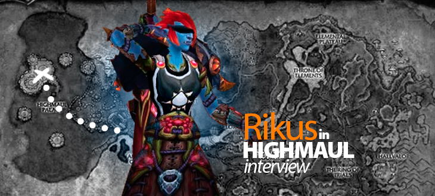
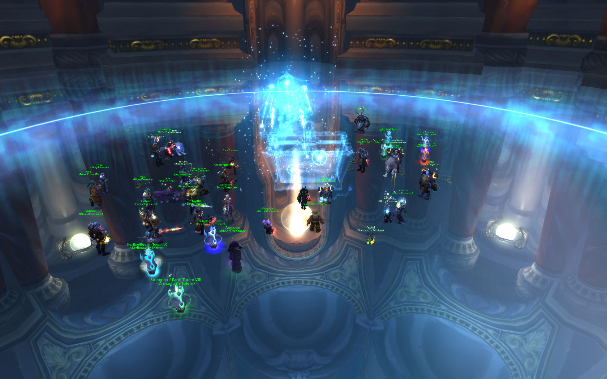
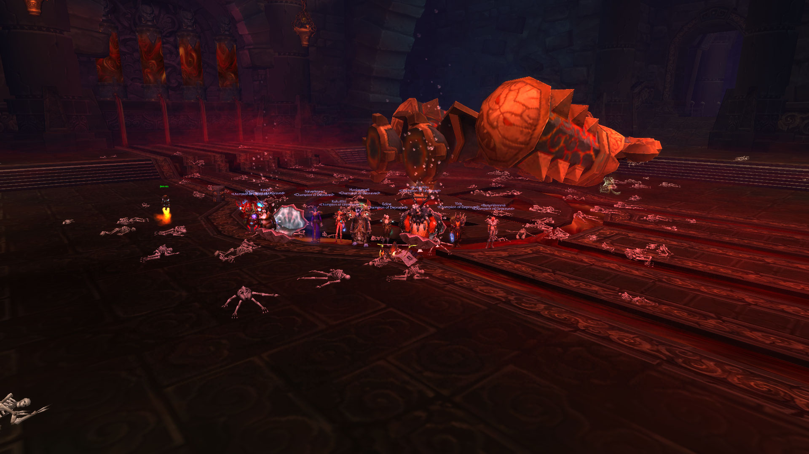
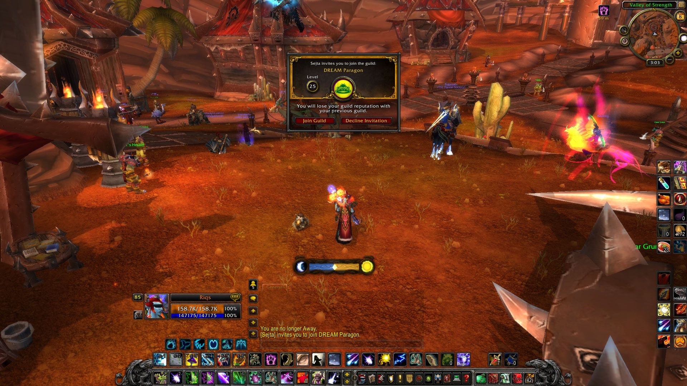
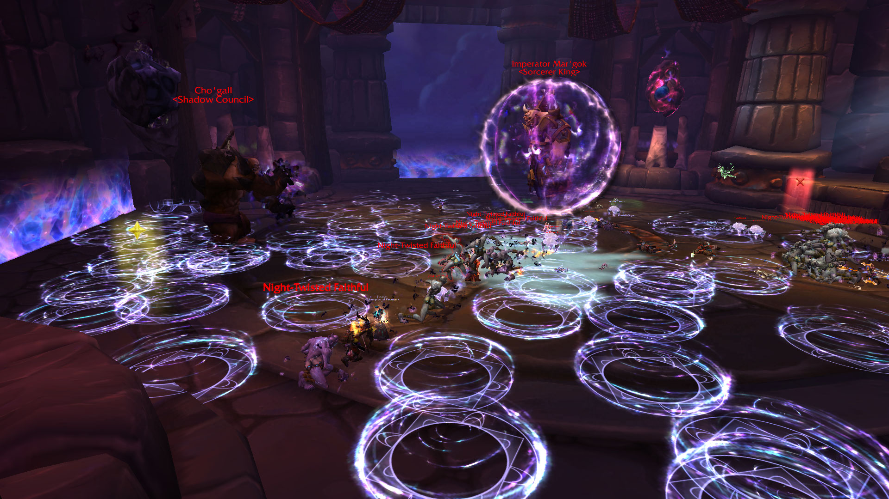

New Blood in Paragon: Rikus Interview

Rikus plays the 5th healer spot in Paragon, which means he raids as healer on encounters where it's needed and otherwise he playes dps. Currently he plays a druid. Rikus joined the guild originally for Mists of Pandaria 10-man roster, but started raiding in the setup at the end of Siege of Orgrimmar tier.
Hi there! Introduce yourself to us briefly.
Hello! I’m Riku, the balance / resto druid in Paragon. I’m maybe more known as the hunter Rikuss from Siege of Orgrimmar farm. I live in Hyvinkää, southern Finland.
What do you do on your free time, when you aren’t playing World of Warcraft?
Work out and keep a healthy lifestyle. I also like to play a lot of other games, so most of my free time goes there.
Tell us about your World of Warcraft history and what class you play now.
I started as a Horde shaman in the very beginning, though switched to Alliance when all my friends rolled the opposite faction. This is when I started my druid, which I still play. I rolled Hunter for Paragon in the beginning of MoP, because it was needed in the raid comp.
I’ve been playing WoW since the very release. I got into the Warcraft franchise through WC 1, 2, and 3 and was really hyped when they announced WoW, and the game was something I was deadset on buying.
I immediately took interest in raiding and thought of it as the best thing to do in the end-game WoW. Obviously back then I wasn’t such a hardcore player, even though I did get nearly all of the instances cleared, apart from Naxxramas where I only got Abomination, Spider and Plague wings done.
In TBC I started to play a lot more. It was during this time that my school performance took a complete nosedive. I think I played around 10 hours each day and reached a whopping 200 days played during a single expansion. This also affected how much I raided and in the end I got to clear all the content for the first time in a whole expansion. Sunwell became the all time favourite raid instance for me, it took us some few months to clear it and that was when I got my first top 100 world rank and started to want to raid even more and reach higher world ranks.
WoTLK was pretty much the same as TBC. I wanted to play and raid more for higher ranks, but didn’t really get the chance to. I was in a really tight-knit guild, where everyone were friends. It was really hard to leave so I ended up staying in for the whole expansion. As a fun fact, we were really close to beating out Paragon on some of the bosses in Ulduar, namely Thorim, Hodir and Freya. :P

Getting Realm First! off Algalon, straight off from summer break. Rank 2 guild was salty.
Cataclysm was when I made the decision to go all-out finally. I left my guild where I had been in for the past 3 expansions to join a lot more progress oriented guild called Angered. This is also when I was introduced to the new 10man raiding Blizzard changed for Cataclysm. I ended up getting world 11th and world 6th in Firelands / Dragon Soul on the 10-man ladder.
I was really happy with our performance in Dragon Soul and we were planning some huge things for MoP progress. This sadly never happened, as people got busy with other things and Angered died out as a high-end 10-man raiding guild. However, this was when I joined Paragon for the first time. I farmed Dragon Soul with Paragon for a few months and even got a spot for the 10-man roster they were planning for MoP after the member problem became apparent.
Mists of Pandaria was a bit odd for me. I was in Paragon when MoP launched and was supposed to raid the first tier of progress with them. As everyone knows this ended up not happening. There were a lot of problems irl for me at the time, I had to finally finish up my school and graduate (I was nearly falling to 5th year) and on top of that I had to work. The MoP daily system and world bosses spawning at 5am was just too much for me with all the other things going on and I burned out pretty heavily even before the raids opened. It was then decided that I would not play in the first tier.
After getting my irl stuff out of the way and playing quite casually for a few months into MoP, my friend in the guild was contacted by Depraved. They were in a dire need of a holy paladin at the time and had found him from Wowprogress’ Dragon Soul rankings. Maybe it was fate or whatever, but he decided not to join unless I could get in as well. Me and him were kind of a 2-man team at the time. In the end Depraved ended up getting me aswell, after their warlock suddenly got a job, lucky me. The rest is history, we scored pretty highly in Throne of Thunder (could have been higher if not for a certain individual) and got world second in Siege of Orgrimmar. After the 20-man mythic announcement, it was pretty obvious that we’d be going to Paragon to form a monster roster.
Why are you playing a Druid? How did it perform in Highmaul?
I play a Druid because of the flexibility. It pretty much has everything; good utility, strong dps / aoe / burst / multidot and can heal if needed. This was my first choice if I would get the 5th healer / dps spot, which I ended up getting. Overall, a very strong class. Druid performed really well in Highmaul and did what we expected it to do.
Imperator Mar’gok was the first boss you killed before anyone else in the world. How did it feel when the boss finally died? Was it like you expected it to be?
To be honest, it felt absolutely fantastic to finally get the world first I’ve missed for a long time. It’s a dream-come-true. I can’t say it was as I expected it to be, because the boss was rather easy going by my standards, but I’m still really happy.

Depraved got to know the infamous Riku nerdscream on this kill.
You played earlier in Depraved, another Finnish 10-man team. What expectations did you have about Paragon before you joined? Are things in the guild like you thought they would be?
I already knew what to expect before joining - being an ex-member after all. The things in the guild were nearly the same as in MoP, apart from the humongous amount of alts we had to prepare for heroic clears. This time I had freed EVERYTHING from my schedule just to play in Paragon and I was mentally prepared as well. No burnout this time. ^^
What is the main difference between your old guild Depraved and Paragon?
Raid times, dedication, preparation, attitude and knowledge. It’s completely different from Depraved.

The guild invite to DREAM Paragon. Happy days.
How was the pressure during the progress? Especially when you were at 5/7 and many people thought you were progressing on Butcher.
For me, the pressure wasn’t really there. I was quite confident that we’d be the first on Imperator Mar’gok and 7/7. Staying at 5/7 and skipping the Butcher was a good call made by Seita.
Name one player from Paragon that you think should be awarded with “the best player in Highmaul progress”, if such a trophy existed?
Can’t award a single player, because this is a team game. I’d give the award to all of the people that helped us clear the 5 heroics prior to mythic progress. You guys/girls are honestly awesome, thank you!
How was the overall difficulty of the instance? If you gave each boss a rank from 1-10, how would it look like?
Kargath Bladefist - 0, complete garbage, a pushover.
Twin Ogron - 0,5 at least you had to dodge fire.
Brackenspore - 3, timing the mushrooms, precise interrupts, good sweeping required. Not hard.
Tectus - 3, just really chaotic, nothing else.
Ko’ragh - 5, our raid comp was not made for this boss. You had to play mechanics this time.
The Butcher - 7, dps check, a lot of raid damage, mechanics really easy.
Mar’gok - 7, rather easy for an end-boss. It was really drawn-out and partly boring. The real boss fight started at P3.
Twin Ogron - 0,5 at least you had to dodge fire.
Brackenspore - 3, timing the mushrooms, precise interrupts, good sweeping required. Not hard.
Tectus - 3, just really chaotic, nothing else.
Ko’ragh - 5, our raid comp was not made for this boss. You had to play mechanics this time.
The Butcher - 7, dps check, a lot of raid damage, mechanics really easy.
Mar’gok - 7, rather easy for an end-boss. It was really drawn-out and partly boring. The real boss fight started at P3.
What are your favourite bosses of all time, and how does Imperator compare to them?
There are quite many favourite bosses for me, a few from top of my head include Mu’ru, Mimiron hardmode, Freya hardmode, Professor Putricide, Valiona & Theralion, Cho’gall. Imperator doesn’t really compare to them.

The leaked photo was taken by me. This will never happen again.
What are your expectations for Blackrock Foundry? Which boss are you looking forward the most?
The expectation is to continue as #1 of course. We’re gonna go all-in like always. I expect the instance to last longer, because there’s a lot more bosses - which at least from beta testing - seemed a lot harder. I’m really looking forwards to Operator Thogar (trains ftw!) and Hans & Franz.
If you could change one thing with your class, it would be…
Mana cost of Wild Growth. It used to be so low. :(
And maybe lower Starfire cast time, it’s ridiculous on low gear.
If you could change one thing in World of Warcraft, it would be…
Connected realms, though the auction house aspect of it should stay. I liked it when we had our very own realm due to population being low.
Any shoutouts?
A huge thanks to all the people that helped us clear the heroics! Esp. to Zaeg who took a little time off from his really busy schedule to help us. Also, I’d like to thank the guilds Angered for supporting me all this time (Nars, Endonyx, Samadin, Sinful, Edine, Hagh and Jayel to name a few individuals) and Blood Pressure. A nubber called Leapster deserves a mention as well. Finally, a huge thanks to all our fans that were rooting for us during progress and believed that we would deliver yet again with the new roster. THANK YOU! <3
- Log in to post comments